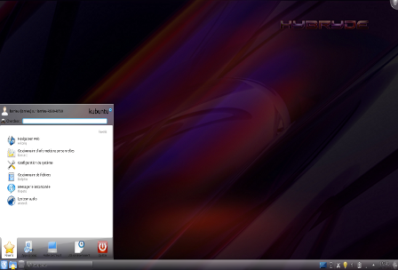
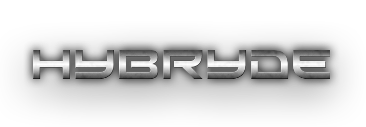

KDE (K Desktop Environment) is a powerful desktop graphical environment. It consists of a set of tools allowing you to graphically operate your computer: window manager, desktop, file manager, menu, virtual workspaces… It is the KDE desktop environment which is installed by default on Kubuntu. KDE is highly regarded for its modularity; while being very easy to use, it offers a wide range of customization options and visual effects. Contrary to popular belief, KDE is also lighter than GNOME.

